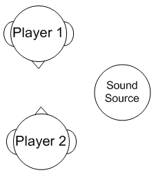
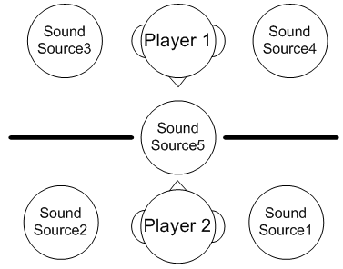
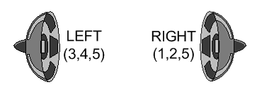
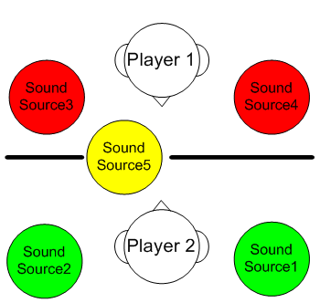
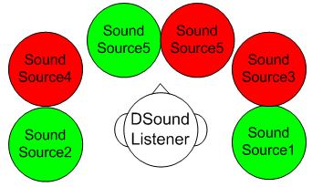
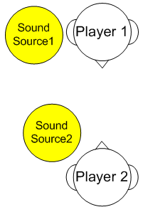
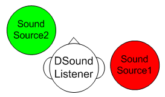
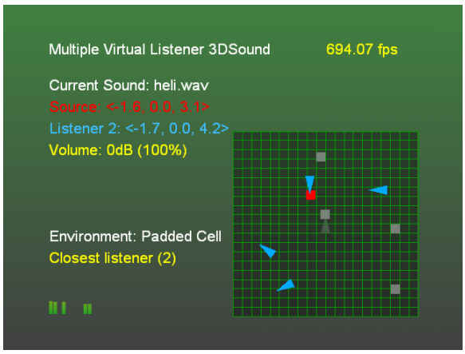

By Scott Selfon, Audio Content Consultant, Xbox Advanced Technology Group
With the real-time 3D-positioning capabilities of the Xbox® video game system from Microsoft, immersive gameplay for one player is fairly straightforward to implement. But doing so for multiple players on a single Xbox console is more complex. The game can use only a single set of speakers to represent 3D acoustic space for several people; in addition, Microsoft® DirectSound® only allows for implementation of a single "listener" object. This paper presents several alternatives, along with their pros and cons, for handling audio positioning in a multi-player title.
From an audio positioning standpoint, one of the biggest difficulties with multiplayer games on a single game console is that every player is going to hear all the sounds the game plays, regardless of whom the sounds are intended for. There is no auditory isolation between players. This means that, except for one player, games will inherently give perceptually incorrect auditory positioning information. As a result, it is up to each player to distill from the "mix" of noises which are intended for him or her, versus those intended for another player. (One of the solutions outlined below actually distills sounds for each player, but at the expense of true positioning cues and "immersive" gameplay.)
The classic example is two players facing each other with a sound source in front and between them:

Player 1 perceives the sound as being to her left, while Player 2 perceives the sound as being to his right. A game can choose to "frustrate" one of the two player's perceptions, or layer both perceptions and depend on each player to isolate sounds meant for his or her ears. This choice is up to the specific title, but several possible solutions are presented below, each of which will be subsequently discussed in more depth:
Although other alternatives can be used, these three configurations comprise the more basic solutions. Let's discuss the implementations, benefits, and drawbacks of each.
This solution "assigns" one output speaker to each player—the acoustic analog to using a split screen for visuals. Of course, this solution requires use of at least a stereo system, with better results achieved by using a Dolby® Surround or Dolby® Digital system. While Solution #1 seems fairly straightforward and logical for some kinds of titles, it is often somewhat difficult to pull off in practice. First, the game is somewhat dependent on both users sitting in a specific order. For example, suppose a player is sitting on the right side of the room and game sounds intended for him emanate from the left speaker. It might be less awkward and confusing for this player if intended game sounds emanated from the closer, right speaker. Secondly, under this scenario, it might be difficult to distinguish who a sound is really intended for. If one player has the center channel, other players depending on the left and right speakers might interpret some of the center sounds as intended for them (particularly if the home theater system uses a "phantom" center channel). Lastly, because players' attention will be divided between looking forward and listening backward, this scenario might be confusing for players depending on the surround channels for their audio data.

Illustration An example of an in-game configuration: Sound Source 5 is audible to both Players 1 and 2, but all other sounds are isolated (perhaps by a wall) to a single player.

Illustration A possible one-speaker-per-player implementation. All sounds heard by Player 1 emanate from the left speaker, while all sounds heard by Player 2 emanate from the right speaker.
Implementation overview:
Benefits:
Drawbacks:
This solution positions each sound source relative to each player (who then becomes a "virtual listener"). Each virtual listener's position and orientation are then transformed relative to the single actual DirectSound listener. The net result is a "composite" DirectSound listener that layers all of the sounds into a single mix.

Illustration Similar scenario to the Solution #1 configuration, except that the orientation is altered slightly to make overlaying more obvious. Again, Sound Source 5 is heard by both players, but other sounds are only heard by one player.

Illustration The net result of folding down the "virtual listeners" to the actual single DirectSound listener. Note that Sound Source 5 is heard from two distinct positions.
Implementation overview:
Benefits:
Drawbacks:
Similar to Solution #2, this solution transforms all virtual listeners to the single physical DirectSound listener. The primary difference is that rather than a sound source potentially using multiple 3D voices (one per player), the sound source is only heard by the listener positioned closest to the sound.

Illustration Two sound sources, both of which can be heard by both players. One sound source is closer to Player 1 and the other is closer to Player 2.

Illustration Each sound source is played only for the player closest to the sound source. This configuration eliminates multiple instances of the two sounds at different positions.
Implementation overview:
Benefits:
Drawbacks:
The attached sample implements Solutions #2 and #3 using the Play3DSound sample as its source. By pressing Y, you can toggle between the algorithm for the closest listener and the algorithm for all listeners.
This sample is shown below:

Illustration (1) The blue triangles represent the virtual listeners. (2) The grey triangle locked at the center of the screen is the "actual" DirectSound listener (which remains stationary). (3) The red square represents the actual sound source position. (4) The grey squares are the transformed and rotated sound sources as they will be heard by the single actual DirectSound listener (based on the positions and orientations of the multiple virtual listeners).
Note that for the sake of simplicity, implementation of Solution #3 in this sample is identical to Solution #2, except that listeners who aren't closest to the sound source are "muted" in Solution #3. This is, of course, far from optimal, as we're still using the multiple 3D voices and spending the processing time to transform and 3D-position them, only to turn around and mute them.
A more complete implementation of Solution #3 would be to use only a single 3D voice. Then, before transforming the single 3D voice, we would determine which listener is closest to the sound source and ignore the others.
The existing Play3DSound sample was tracking the angle of the listener's orientation in the X-Z plane. We translate the sound source to position it relative to the origin, and then rotate it based on the listener's angle. Again, this might be a somewhat simplified solution for titles whose listener orientation can move in all three axes, but is sufficient for many implementations.
Of course, these are not the only possible solutions to the multiple-listener problem. Based on the specific title and audio implementation desired, a title could implement sounds so that some sounds are heard by all listeners, while others are only played by the listener closest to the sound source. Or, a title could combine the first two solutions by "biasing" sounds for Player 1 toward the left speaker (without sending sounds solely to the left speaker), and "biasing" sounds for Player 2 toward the right speaker.
While no solution can match having a separate, isolated listening space for each player, the layered virtual listener solution outlined above can provide adequate player feedback. In turn, this feedback can provide immersive directional auditory information to help influence and inform gameplay.
For more information about topics presented in this paper, please consult other chapters of the Xbox Audio Best Practices Guide, the Xbox Development Kit documentation, and the white papers in the Audio Designer's Corner, or send an e-mail message to content@xbox.com.